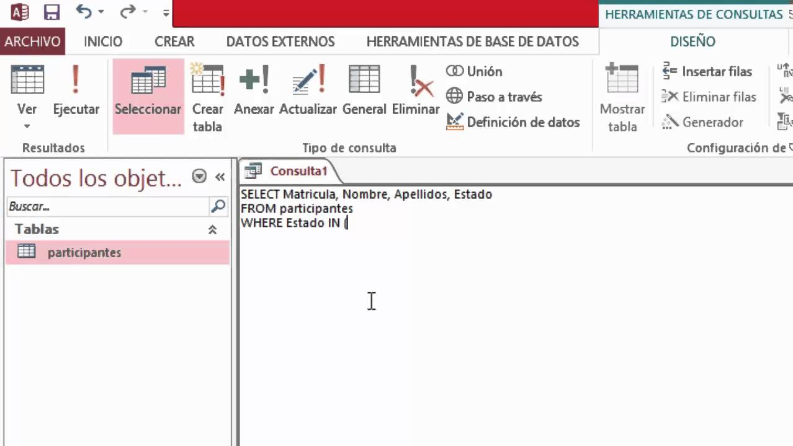
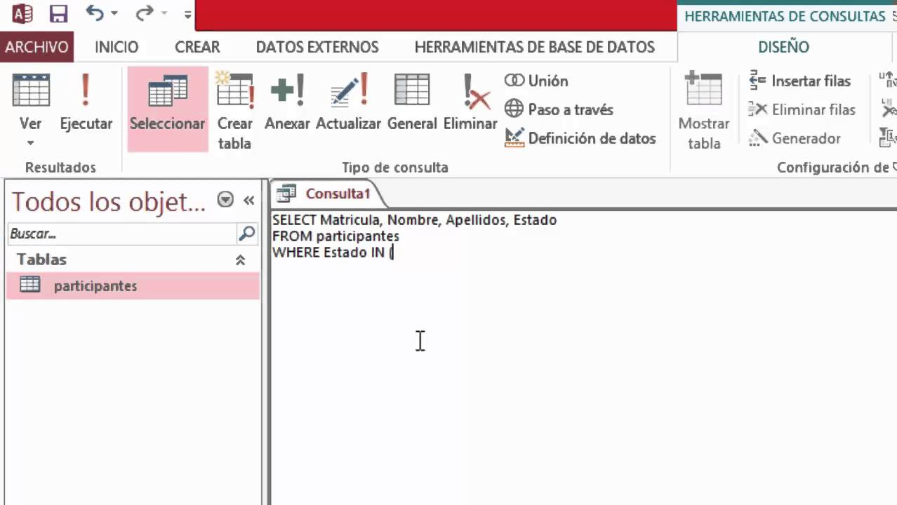

Tarea 14 - SQL
¿Qué es SQL?
El Lenguaje de Consulta Estructurado popularmente conocido por sus siglas en inglés como SQL,
es un tipo de lenguaje de programación que ayuda a solucionar problemas específicos o relacionados con la
definición, manipulación e integridad de la información representada por los datos que se almacenan en las
bases de datos.
Algunos aspectos de SQL están basados en el cálculo relacional, algunos en el álgebra relacional que
provienen del modelo relacional y otros a ninguno de los dos sino que son parte de SQL.
Simbolos, sintaxis y esquelos de los programas
La sintaxis SQL se basa en la sintaxis del idioma inglés y usa muchos de los mismos
elementos que la sintaxis de Visual Basic para Aplicaciones (VBA).
SQL no se usa solo para manipular datos, sino también para crear y modificar el diseño de objetos de base
de datos, como tablas. El elemento de SQL que se usa para crear y modificar objetos de base de datos se
denomina lenguaje de definición de datos (DDL).
Cláusulas SQL
Como una frase, una instrucción SQL tiene cláusulas. Cada cláusula realiza una función de la instrucción
SQL. Algunas cláusulas son necesarias en una instrucción SELECT.
1. SELECT: Muestra una lista de campos que contienen datos de interés.
2. FROM: Muestra las tablas que contienen los campos de la cláusula SELECT.
3. WHERE: Especifica los criterios de campo que cada registro debe cumplir para poder ser incluido en los
resultados.
4. ORDER BY: Especifica la forma de ordenar los resultados.
5. GROUP BY: En una instrucción SQL que contiene funciones de agregado, muestra los campos que no se
resumen en la cláusula SELECT.
Una instrucción SQL tiene el formato general:
SELECT field_1
FROM table_1
WHERE criterion_1
;
Primeros pasos: Aplicación para programar
 

Dado que es un lenguaje de base de datos, tiene una gran compatibilidad con gran parte de las IDE que puede haber en el mercado, pues desde ACCESS de Office hasta VisualStudio permite que puedas empezar a crear las bases de datos y emparejarlos, pero serian necesarios los plugins de SQL que se pueden descargar desde los mismos programas.
¿A qué paradigma pertenece?
SQL es un multiparadigmas dada la gran cantidad de lenguajes de programación con los que se puede llegar a combinar.
Ejemplo de un programa
# CREATE TABLE Empleado
(
id INT NOT NULL AUTO_INCREMENT PRIMARY KEY,
Nombre VARCHAR(50),
Apellido VARCHAR(50),
Direccion VARCHAR(255),
Ciudad VARCHAR(60),
Telefono VARCHAR(15),
Peso VARCHAR (5),
Edad (2),
Actividad Específica (100),
idCargo INT
)